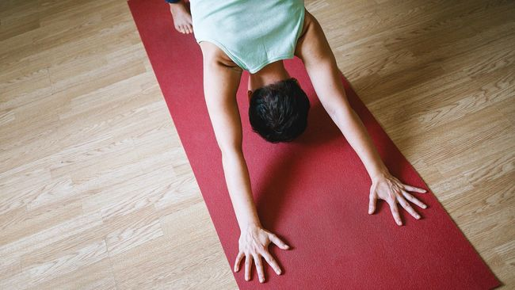

5 Tips Olahraga di Rumah Selama Pandemi Corona

Jakarta, CNN Indonesia -- Para ahli memberikan lima cara efektif untuk menjaga kesehatan di rumah selama masa Pembatasan Sosial Berskala Besar (PSBB) selama pandemi Corona. Berikut lima tips tetap sehat di rumah selama PSBB.
Menjaga kesehatan tubuh dengan berolahraga idealnya rutin dilakukan setiap pekan. Dalam masa pandemi Covid-19 seperti sekarang, olahraga menjadi hal yang lebih penting dari sebelumnya.
Disarankan untuk berolahraga minimal selama dua sampai tiga jam dalam satu pekan supaya badan tetap bugar.
Dilansir Daily Mail, berikut lima tips tetap sehat di rumah saat PSBB :
- Terus Bergerak
- Penguatan Otot
- Konsumsi Lebih Banyak Protein
- Komitmen Berolahraga
- Hindari Membeli Peralatan Olahraga Mahal
Instruktur fitnes yang juga mantan atlet Australia, Ben Lucas mengatakan hal penting yang harus dilakukan untuk menjaga kesehatan selama masa karantina adalah dengan terus bergerak.
Lakukan jenis latihan lain untuk menghindari kebosanan yang membuat Anda bisa kehilangan kebugaran.
Menurut pedoman olahraga nasional Australia, orang berusia 18 hingga 64 tahun harus berolahraga minimal dua setengah jam per pekan untuk menjaga kesehatan.
Selain itu pedoman olahraga nasional Australia juga menyarankan melakukan aktivitas penguatan otot setidaknya dua hari setiap pekan untuk meningkatkan atau mempertahankan kekuatan tubuh.
Lakukan lebih dari sekadar berlari di sekitar blok rumah. Bisa dengan melakukan pilates atau angkat beban di rumah sebagai tambahan latihan.
Selain berolahraga, Sharelle Grant yang juga instruktur sekaligus perawat di Melbourne mengatakan sangat penting mengkonsumsi lebih banyak protein untuk meningkatkan kekebalan tubuh.
Tak dapat dipungkiri, rasa malas kadang datang lebih besar dari keinginan untuk berolahraga. Sebab itu dibutuhkan komitmen untuk tetap berolahraga setiap harinya.
Pacu motivasi dan tantang diri sendiri setiap harinya untuk tetap berolahraga dengan membuat target. Misalnya, target melakukan 50 squat sehari dalam 20 hari.
Anda juga bisa melakukan olahraga secara berkelompok untuk menambah semangat dan konsistensi latihan harian. Seperti berolahraga bersama melalui aplikasi penghubung dengan video.
Tips terakhir yakni menentukan tujuan olahraga yang dilakukan. Itu dapat meminimalisir keinginan untuk membeli peralatan olahraga yang mahal. Banyak alternatif murah tanpa mengeluarkan banyak uang supaya bisa tetap sehat dan bugar di rumah.
Latihan gerakan dasar di rumah jika dilakukan secara rutin dipercaya dapat memberikan dampak maksimal. Seperti gerakan push up, sit up, lunges dan elevated hip thrusts atau meninggikan pinggul dengan beban.
Lakukan masing-masing gerakan selama 10 kali selama 15 menit. Beristirahatlah selama satu menit sebagai jeda dari gerakan ke gerakan.
Dikutip dari : CNN Indonesia